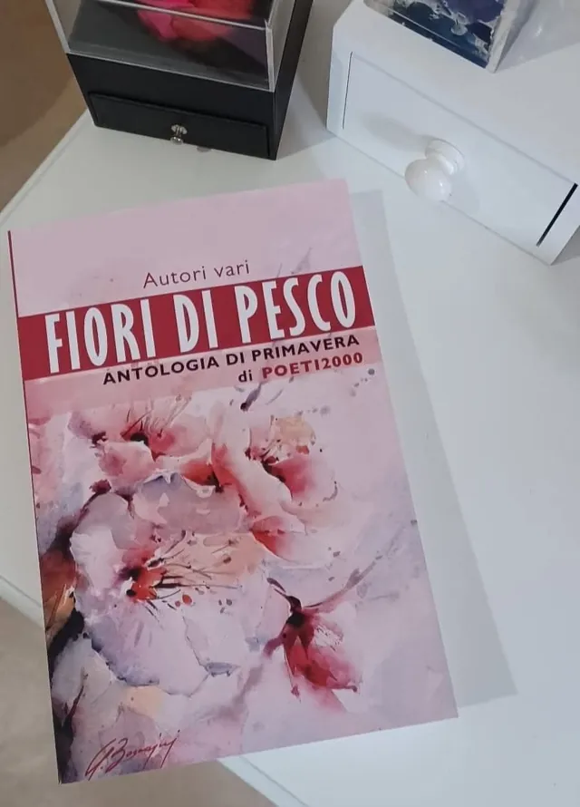
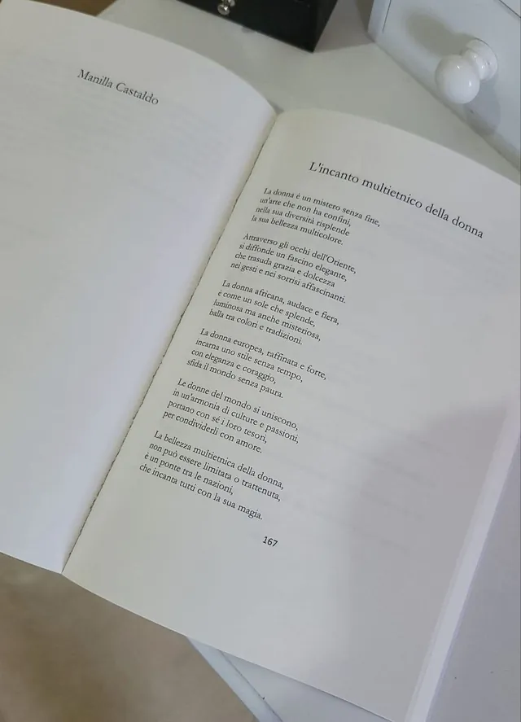
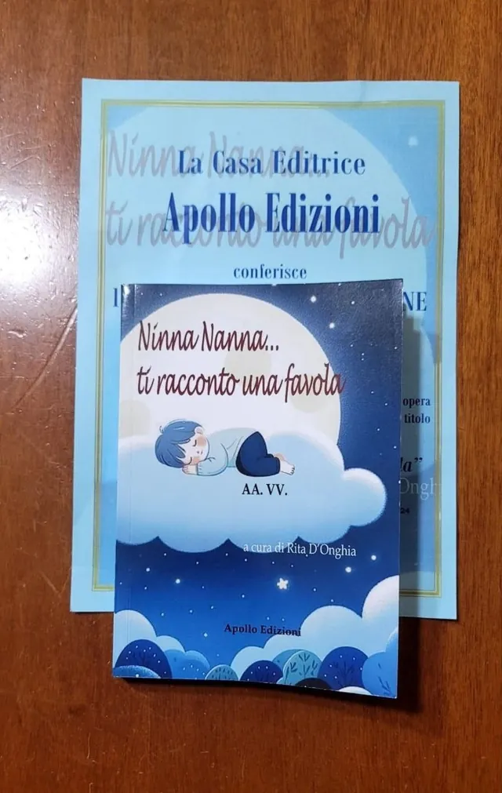
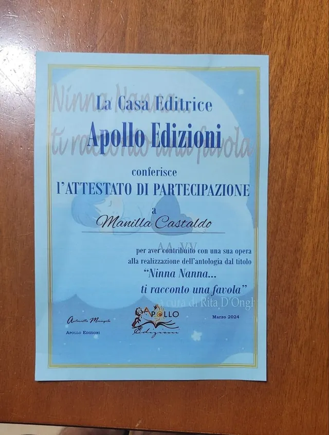
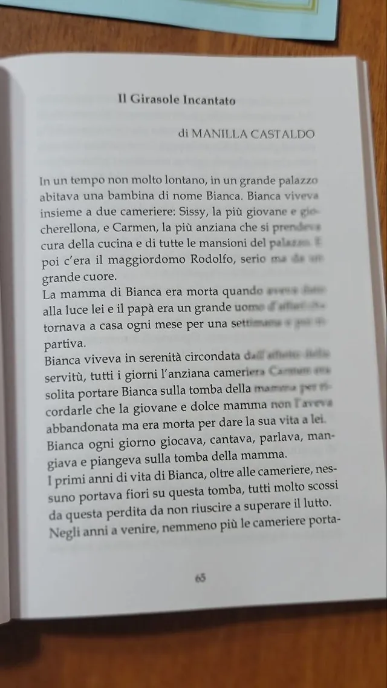

Antologia InfinitAmore 2026
Poesia: «L'eco di un sentimento»
L'antologia si può sfogliare online su Calaméo.
Sfoglia l'antologia «InfinitAmore 2026» su Calaméo (si apre in una nuova scheda)Le antologie che raccolgono le poesie e i racconti brevi di Manilla Castaldo
Poesia: «L'eco di un sentimento»
L'antologia si può sfogliare online su Calaméo.
Sfoglia l'antologia «InfinitAmore 2026» su Calaméo (si apre in una nuova scheda)

Antologia di primavera di Poeti2000 · 2024
Poesia: «L'incanto multietnico della donna»
Un'antologia benefica: l'intero ricavato della vendita del volume è devoluto a Save The Children.
Vedi l'antologia su Amazon «Fiori di pesco» (si apre in una nuova scheda)«Sono felice di far parte, con le mie poesie, in questa iniziativa benefica per Save The Children. Mi piace l'idea di dare il mio piccolo contributo per aiutare i bambini di paesi così poveri. Un piccolo gesto di gentilezza può avere un impatto enorme sulla vita di qualcuno.»
Manilla Castaldo



Apollo Edizioni · a cura di Rita D'Onghia · marzo 2024
Racconto breve: «Il girasole incantato»
Una raccolta di filastrocche e racconti brevi dedicata ai bambini e ai ragazzi.
Manilla ha ricevuto da Apollo Edizioni l'attestato di partecipazione all'antologia.